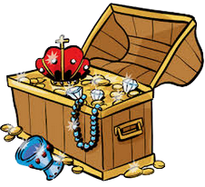

Suis le programme de construction pour trouver le point X où se cache le trésor dans la zone jaune.
Pour nommer un point, une droite ou un cercle : bouton Renommer un objet puis clic sur l'objet (ou clic droit dessus → Renommer). Tape seulement la lettre (X, c, d…).
